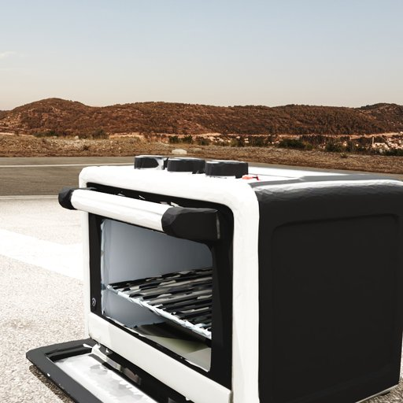
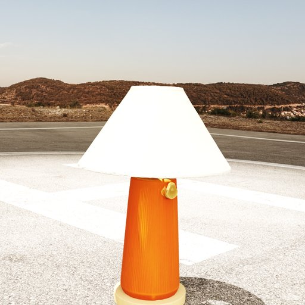
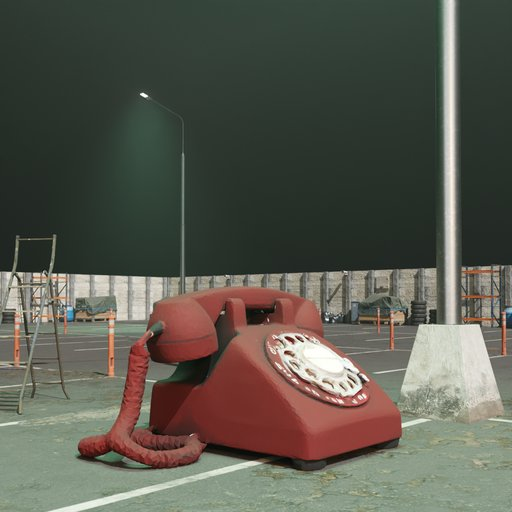
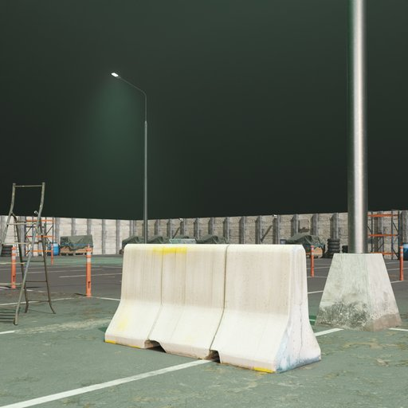
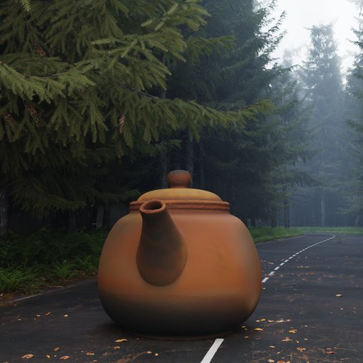
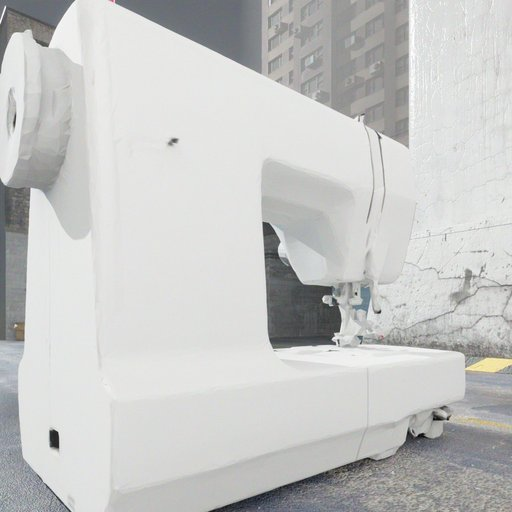

Gallery
Scene-Aware Rendering Showcase
Best VLM-gated renders across 7 diverse Blender scenes. Each object is automatically placed, lit, and iteratively refined by goal-driven loop agents until quality standards are met.

Indoor (4.blend)
Cordless Screwdriver

Indoor (4.blend)
Nightstand

Indoor (4.blend)
Folding Table

Indoor (4.blend)
Pickup Truck

Outdoor 7 — Desert Highway
Toaster Oven

Outdoor 7 — Desert Highway
Table Lamp

Outdoor 9 — Coastal Bridge
Park Bench

Outdoor 9 — Coastal Bridge
Parking Meter

Outdoor 9 — Coastal Bridge
Sledgehammer
Outdoor 9 — Coastal Bridge
Rocking Chair

Outdoor 11 — Industrial Yard
Retro Telephone

Outdoor 11 — Industrial Yard
Concrete Barrier

Outdoor 13 — Neon Wetland
Espresso Machine

Outdoor 13 — Neon Wetland
Traffic Cone

Outdoor 13 — Neon Wetland
Electric Drill
Outdoor 13 — Neon Wetland
Cement Mixer Truck

Outdoor 15 — Misty Forest
Desk Stapler

Outdoor 15 — Misty Forest
Ceramic Teapot

Outdoor 15 — Misty Forest
Street Bench

Outdoor 16 — Urban Concrete
Rolling Office Chair

Outdoor 16 — Urban Concrete
Sewing Machine